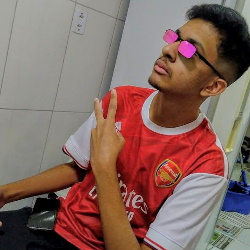
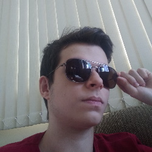

CRÉDITOS
| Mentes por trás desse trabalho | |
|---|---|
| Isabella | Eae galera, eu sou a Isabella, tenho 15 anos. Moro em Justinópolis. As coisas da quais eu gosto de fazer são jogar, sair com meus amigos, escutar música. Eu não tenho estilo um musical preferido, aliás, exatamente por escutar muita música, sou bem eclética. Enfim, não tenho muito o que dizer sobre mim, acho que por fim é isso, abraços. |
| Olá meu nome é João Pedro Torres, tenho 15 anos (nascido no dia 04/01/2006). E no meu tempo livre gosto bastante de desenhar, assistir filmes e séries, praticar algum esporte ou jogar um jogo eletrônico. Sou apaixonado por viajar, inclusive minha foto demonstra um dos meus últimos destinos, Foz do Iguaçu, Paraná em 2019 e também sou fascinado em sempre aprender algo novo. Espero que tenham gostado do nosso site e agradeço pela visualização. | João Pedro |
| Kauã  | Olá amantes do HTML e da música! Eu digo que meu estilo musical é bem eclético, escuto de tudo um pouco, mas se pudesse listar 3 estilos seriam hip-hop, pop e funk, escuto bandas como The Score e Imagine Dragons, escuto funkeiros como Mc Rick e escuto rappers como Emicida e Djonga, mas gosto muito também de rock e sertanejo, no fim, o que importa é escutar a melhor invenção humana, música! |
| Olá meus confederados. Me chamo Mateus e tenho 15 anos (23/01/2006). Meu estilo musical é eclético até demais, e minhas playlists são uma bagunça. Geralmente eu escuto pop, rap e seus subgêneros, mas também escuto eletrônica quando estou jogando. Além de escuar música, gosto bastante de jogar videogame, fico muito em call com meus amigos, e, por último mas não o menos importante, gosto muito de programar, além de outras coisas. | Mateus  |
| Penelope | Faz parte do grupo mas ficou sem o texto e a foto :( |
|
Agradecimentos especiais: Coutinho |
|

REFERÊNCIAS

- Origem da música
- Importância da música
- O que é / Como surgiu o Rock?
- O que é / Como surgiu o sertanejo?
- O que é o funk?
- Como surgiu o funk?
- O que é o hip hop?
- Como surgiu o hip hop? (1)
- Como surgiu o hip hop? (2)
- O que é o pop?
- Como surgiu o pop? (1)
- Como surgiu o pop? (2)
- Instrumental rock
- Instrumental sertanejo
- Instrumental funk
- Instrumental hip hop
- Instrumental pop